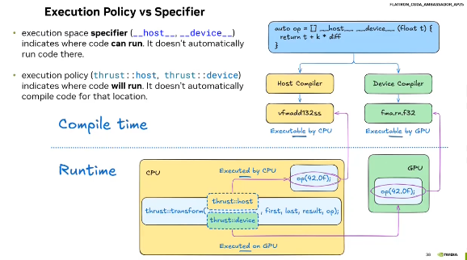
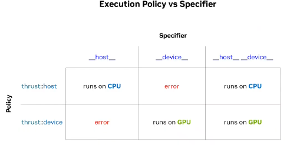

Thrust Tutorial#
Reference: Youtube
The underlying Compilation#

Code Explanation#
Start withe the following code:
%%writefile Sources/cpu-cooling.cpp
#include <cstdio>
#include <vector>
int main() {
float k = 0.5;
float ambient_temp = 20;
std::vector<float> temp{ 42, 24, 50 };
auto op = [=](float temp){
float diff = ambient_temp - temp;
return temp + k * diff;
}
std::printf("step temp[0] temp[1] temp[2]\n");
for (int step = 0; step < 3; step++) {
std::transform(temp.begin(), temp.end(),
temp.begin(), op);
std::printf("%d %.2f %.2f %.2f\n", step, temp[0], temp[1], temp[2]);
}
}
Writing Sources/cpu-cooling.cpp
!nvcc -x cu -arch=native Sources/cpu-cooling.cpp -o /tmp/a.out # compile the code
!/tmp/a.out # run the executable
step temp[0] temp[1] temp[2]
0 31.00 22.00 35.00
1 25.50 21.00 27.50
2 22.75 20.50 23.75
We implement it at GPU side.
thrust::universal_vector is a vector that can be used in both host and device side.
Unified memory is a memory management system that allows the CPU and GPU to share a single memory space without explicit data transfers cudaMemcpy. In the underlying implementation, it was created using cudaMallocManaged. When using unified memory, the CUDA runtime automatically transfers the data whose unit is a page (typically 4KB) between the host and device as needed. But, the synchronization is still needed. It is UB(undefined behavior) if the data is accessed from both host and device without synchronization.
%%writefile Sources/thrust-cooling.cpp
#include <thrust/execution_policy.h>
#include <thrust/universal_vector.h>
#include <thrust/transform.h>
#include <cstdio>
int main() {
float k = 0.5;
float ambient_temp = 20;
std::vector<float> a{ 42, 24, 50 };
thrust::universal_vector<float> temp(a.begin(), a.end());
auto transformation = [=] __host__ __device__ (float temp) { return temp + k * (ambient_temp - temp); };
std::printf("step temp[0] temp[1] temp[2]\n");
for (int step = 0; step < 3; step++) {
thrust::transform(thrust::device, temp.begin(), temp.end(), temp.begin(), transformation);
std::printf("%d %.2f %.2f %.2f\n", step, temp[0], temp[1], temp[2]);
}
}
Overwriting Sources/thrust-cooling.cpp
!nvcc -std=c++14 --extended-lambda Sources/thrust-cooling.cpp -x cu -arch=native -o /tmp/a.out # compile the code
!/tmp/a.out # run the executable
step temp[0] temp[1] temp[2]
0 31.00 22.00 35.00
1 25.50 21.00 27.50
2 22.75 20.50 23.75
Execution Policy vs Specifier#
Execution Plolicy(thrust::device,thrust::host) indicates where the code will run. It doesn’t automatically compile code for the location.
Execution Specifier(__host__,__device__) indicates where the code can run. It doesn’t automatically run code there.

